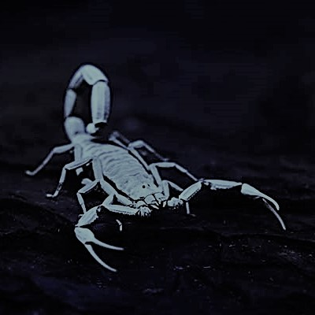
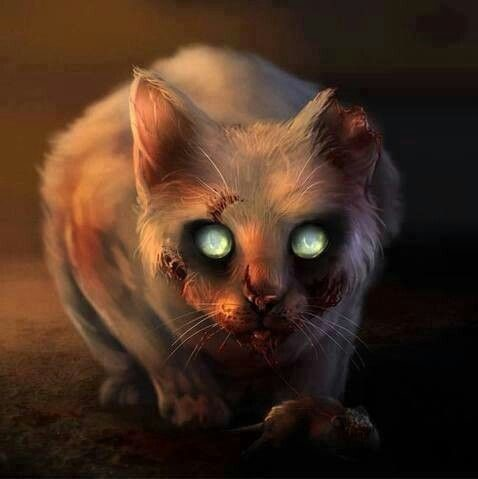
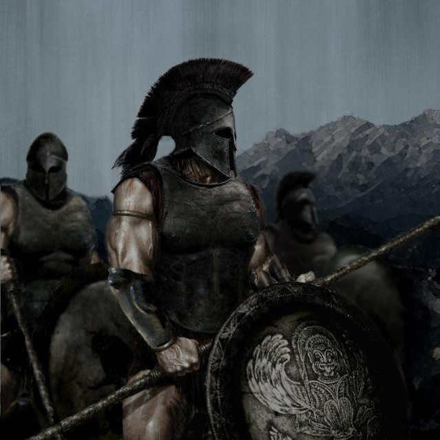

Walkthrough
If you get lost, don't despair! These instructions lead you away from the dankness!
In the Pyramid you, my dear treasure hunter, will have to go down the stairs, east and then down again. These actions should be followed by a swift turn west, then a stairway down, and finally going east twice. On your way you will fight fearsome adversaries and find useful items. At the end of the Pyramid you will have to defeat the first Boss to gain access to the next level.
After defeating the first Boss, you scurry down the stairs to find yourself in a completely new place. You must follow these instructions: first go south, then west, then push a mysterious button, then go north, north again, push another button, go east, east again, push the third button, go south, south again and push the final button. Finally you have to go back north and east to take a lovely golden item. Now you must go west four times, meet the second Boss and descend into the darkness yet again.
Now the third level has appeared around you. In this maze you must go west, north, twice west, south and take the key pieces. Then follow these steps: go west, north, take the item, go north, west, east, east and use the anvil. To finish the level, go west, open the door, go north and beat the Boss.
In the Dankest Dungeon, the final level, you’re on your own…

Scorpions
The Scorpions are among the first dangers you face. Their deadly sting may take you out of the game before you've even really started.

Mummy Cat
With visceral feline wrath the Mummy Cat will rip you apart if you even think about not giving it some tuna.

Skeleton Warriors
The Skeleton Warriors come for you from the world beyond ours. Your death is their dearest wish.

Cursed Mayan Soldiers
The Mayan Soldiers have been cursed to scalp and decapitate every human they encounter. You're next on their list.
Merchant
You can purchase the finest swords and potions from the Merchant. By the way, please don't kill the Merchant. He's a really nice guy!